| metric | value | meaning |
|---|---|---|
| evaluated | 12/12 | samples with a visible free surface |
| MAE (px) | 70.85 | baseline level-line error in pixels |
| median |err| (px) | 54.93 | |
| RMSE (px) | 101.04 | |
| bias (px) | +21.26 | positive = estimate below GT (too low a level) |
| MAE (mm) | 20.17 | using cm/px scale from container extent |
| MAE fill fraction (2D) | 0.200 | naive rim-to-base linear mapping |
| within 3 px | 33% | |
| within 2% fill | 33% | |
| GT self-check: |rendered − analytic| mean / max (px) | 0.32 / 0.74 | free-surface near edge from the GT render vs. analytic camera projection; should be ≲1 px |
| detector_gradient_mae_px | 65.558 | per baseline detector (primary = step) |
| detector_gradient_within_3px | 0.333 | per baseline detector (primary = step) |
| detector_step_mae_px | 70.851 | per baseline detector (primary = step) |
| detector_step_within_3px | 0.333 | per baseline detector (primary = step) |
| MAE (px) — box | 85.90 | per container / liquid (primary detector) |
| MAE (px) — cylinder | 55.80 | per container / liquid (primary detector) |
| MAE (px) — milk_dilute | 94.88 | per container / liquid (primary detector) |
| MAE (px) — oil | 21.01 | per container / liquid (primary detector) |
| MAE (px) — tea | 72.63 | per container / liquid (primary detector) |
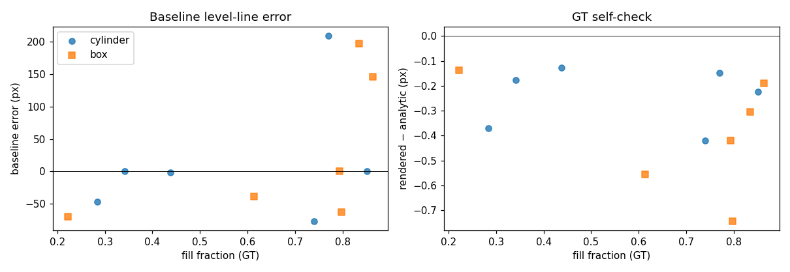
| sid | container | liquid | fill | h (cm) | fov | GT row | analytic | est row (step) | err px (step) | err px (gradient) | err mm | err fill |
|---|---|---|---|---|---|---|---|---|---|---|---|---|
| s000 | cylinder | oil | 0.851 | 6.95 | 23.4 | 152.5 | 152.7 | 152.3 | -0.15 | -0.35 | -0.04 | +0.000 |
| s001 | box | milk_dilute | 0.835 | 9.39 | 31.7 | 173.7 | 174.0 | 371.0 | +197.30 | +196.55 | +77.01 | -0.685 |
| s002 | cylinder | milk_dilute | 0.739 | 6.19 | 22.6 | 224.9 | 225.3 | 148.0 | -76.86 | -76.86 | -18.13 | +0.217 |
| s003 | box | tea | 0.864 | 8.46 | 31.6 | 169.3 | 169.5 | 315.5 | +146.13 | +64.82 | +45.14 | -0.461 |
| s004 | cylinder | milk_dilute | 0.770 | 7.14 | 23.5 | 146.4 | 146.6 | 355.5 | +209.09 | +208.34 | +42.59 | -0.460 |
| s005 | box | milk_dilute | 0.794 | 7.59 | 32.0 | 201.5 | 201.9 | 201.2 | -0.26 | -1.58 | -0.11 | +0.001 |
| s006 | cylinder | milk_dilute | 0.284 | 2.83 | 23.0 | 348.8 | 349.1 | 301.6 | -47.15 | +65.15 | -12.61 | +0.127 |
| s007 | box | milk_dilute | 0.613 | 7.14 | 22.2 | 199.6 | 200.2 | 161.0 | -38.64 | -36.56 | -10.08 | +0.087 |
| s008 | cylinder | tea | 0.438 | 4.90 | 27.0 | 289.4 | 289.5 | 288.0 | -1.39 | -1.25 | -0.34 | +0.003 |
| s009 | box | tea | 0.222 | 2.10 | 24.5 | 343.4 | 343.5 | 273.0 | -70.37 | -97.64 | -18.97 | +0.201 |
| s010 | cylinder | oil | 0.342 | 3.29 | 25.4 | 328.4 | 328.6 | 328.6 | +0.16 | -36.27 | +0.04 | -0.000 |
| s011 | box | oil | 0.797 | 8.32 | 29.0 | 183.7 | 184.5 | 121.0 | -62.71 | -1.34 | -16.96 | +0.162 |
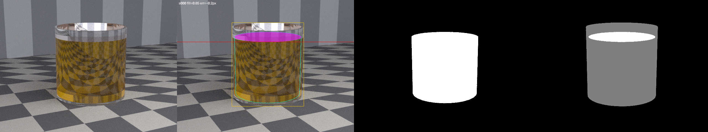
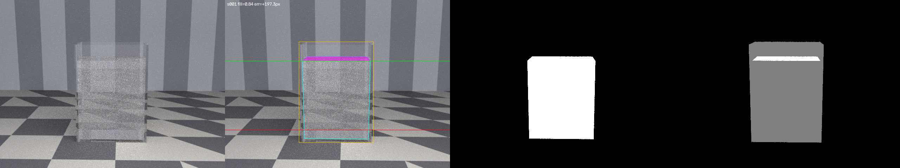
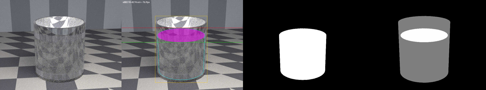
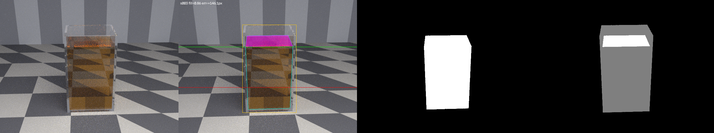
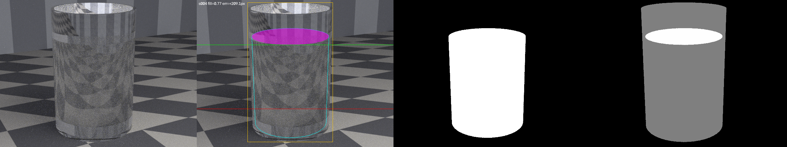
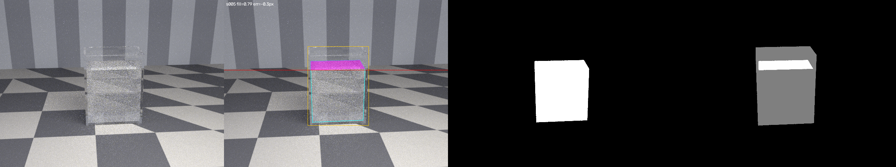
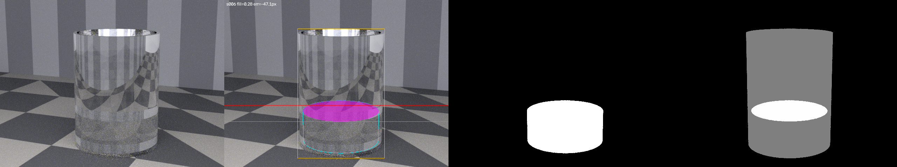
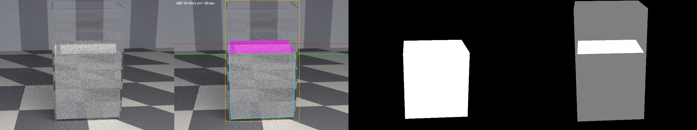
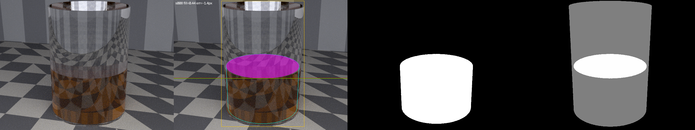
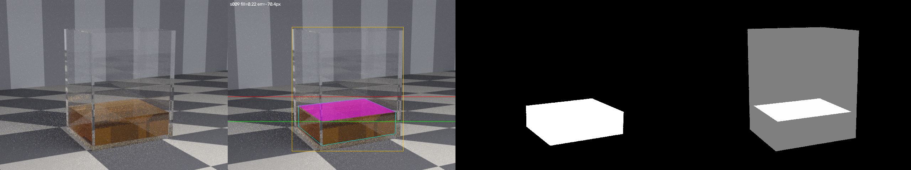
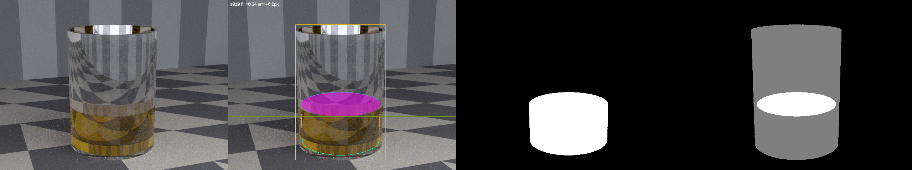
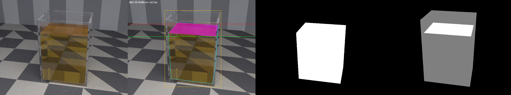